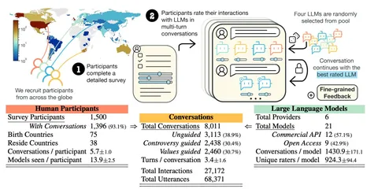

Интересное с NeurIPS по мнению Анастасии Беззубцевой, руководителя группы аналитики в Яндексе: доклад о датасете The PRISM учитывает социодемографические характеристики вроде места проживания, этнической принадлежности, уровня дохода, вероисповедания и так далее. Для сбора данных привлекли 1,5 тысячи человек из 75 стран. Участники, которых искали с помощью сервиса Prolific, провели более 8 тысяч диалогов с 21 языковой моделью.
Анализ данных показал, что разные группы людей ведут разные разговоры с LLM. Так, пожилые респонденты чаще молодых поднимали тему выборов, а чернокожие реже белых говорили об изменении климата. При ранжировании моделей индивидуальные характеристики пользователя оказываются очень важны. Например, Zephyr-7b хорошо показывает себя в обсуждении чувствительных тем, а mistral-7b больше других понравилась респондентам из Африки.
На постер-сессии Анастасия пообщалась с докладчицей Ханной Роуз, которая получает PhD в Оксфорде и имеет экономический бэкграунд.
Я задала ей свой любимый вопрос о качестве данных, полученных краудом. Роуз сказала, что проверка участников была минимальной. Исполнителям настолько нравилось задание — просто поболтать с LLM на заданную тему, — что на датасет потратили вдвое меньше денег, чем планировали, а результат авторов более чем устраивает.
#YaNeurIPS
Душный NLP
